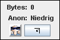
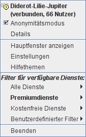

Anonym-O-Meter Inhalt
Anonym-O-Meter Inhalt  Bedienung Kommandozeilenargumente
Bedienung Kommandozeilenargumente
Anonym-O-Meter Inhalt Bedienung Kommandozeilenargumente

Das Mini-Fenster von JonDo ist eine minimalistische Ausgabe des
Hauptfensters. Sie können es durch einen Klick auf  oder durch einen
Doppelklick in das Hauptfenster aufrufen. Dieses Fenster zeigt nur die
wichtigsten Informationen an und besteht aus folgenden Elementen:
oder durch einen
Doppelklick in das Hauptfenster aufrufen. Dieses Fenster zeigt nur die
wichtigsten Informationen an und besteht aus folgenden Elementen:

Sie können über das Kontextmenü von JonDo immer schnell auf die wichtigsten Funktionen zugreifen. Das Kontextmenü ist durch einen Klick mit der rechten Maustauste auf das Hauptfenster, das Mini-Fenster oder das kleine Icon in der Windows-Schaltfläche erreichbar.